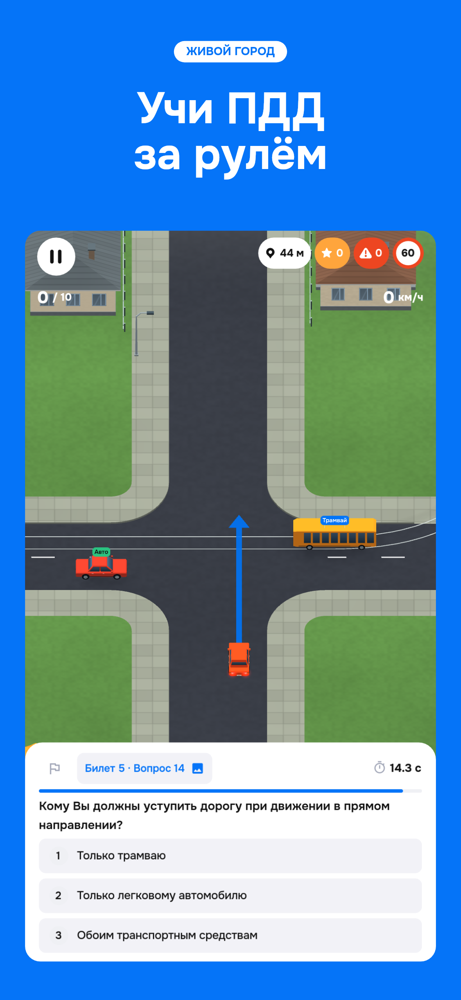
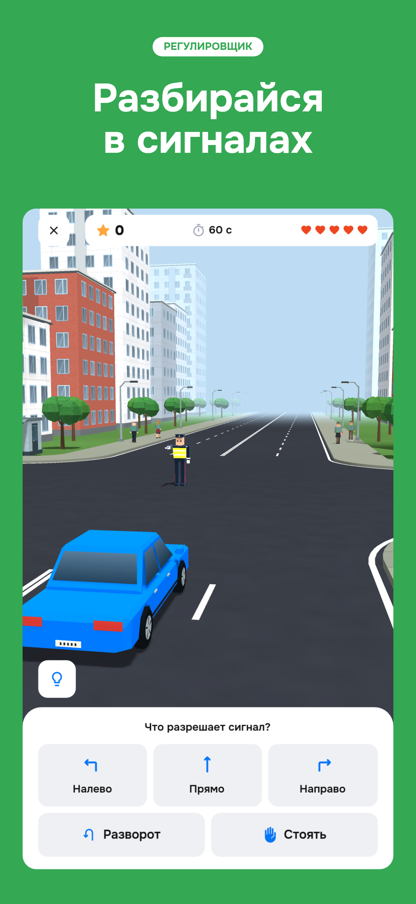
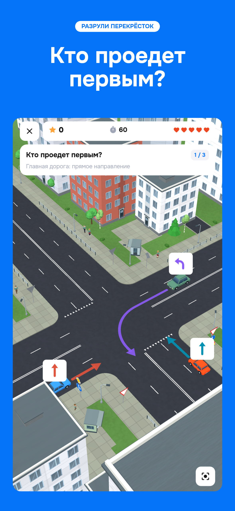
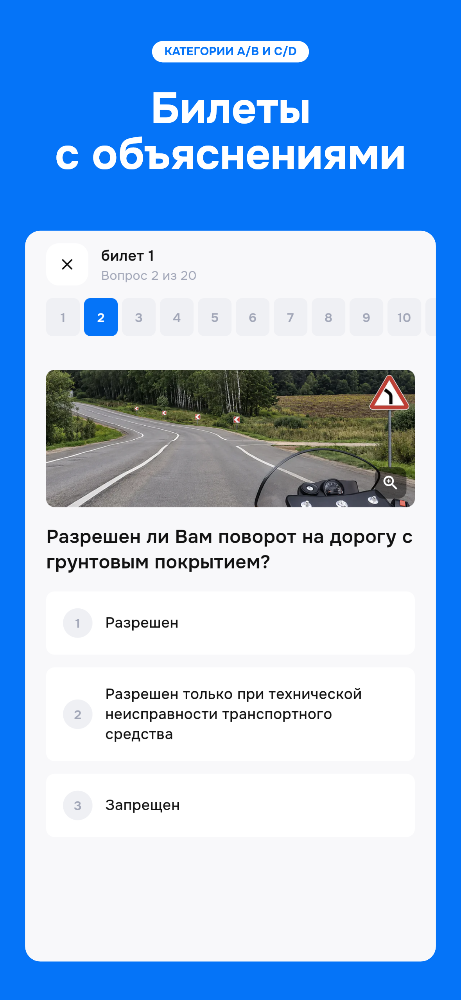
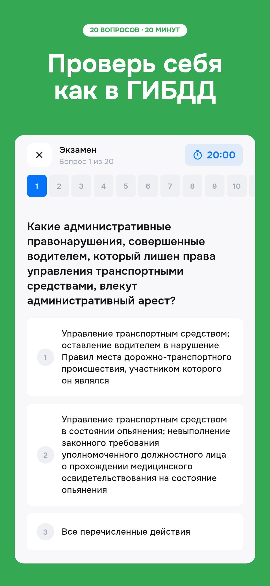
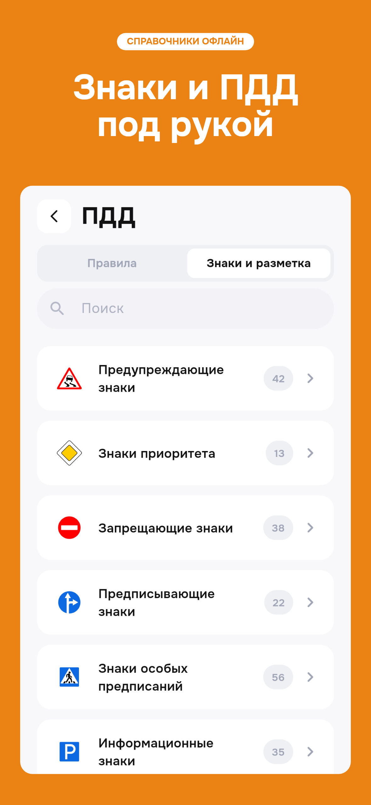
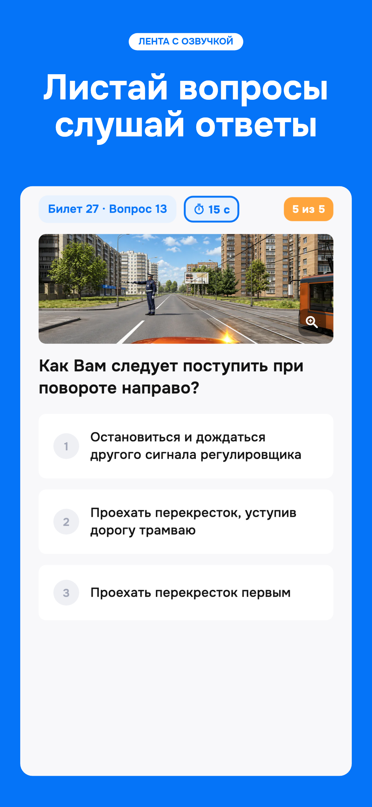
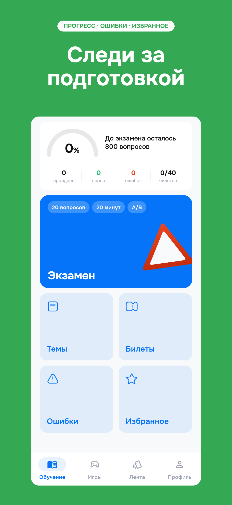

ЖИВОЙ ГОРОД
Живой город → регулировщик → перекрёсток → остальные возможности.
Скачать набор · Источники и размеры · Google Play и RuStore

ЖИВОЙ ГОРОД

РЕГУЛИРОВЩИК

РАЗРУЛИ ПЕРЕКРЁСТОК

КАТЕГОРИИ A/B И C/D

20 ВОПРОСОВ · 20 МИНУТ

СПРАВОЧНИКИ ОФЛАЙН

ЛЕНТА С ОЗВУЧКОЙ

ПРОГРЕСС · ОШИБКИ · ИЗБРАННОЕ